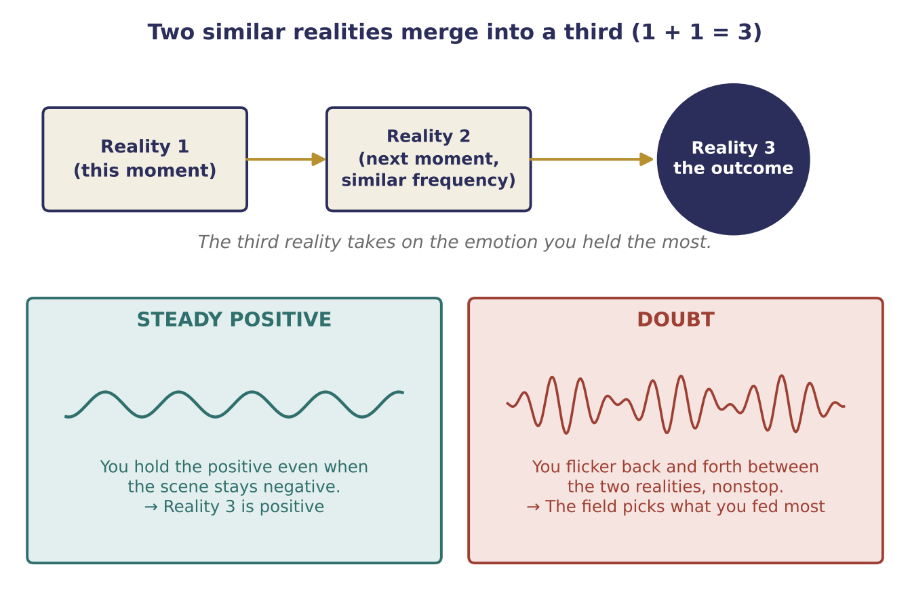
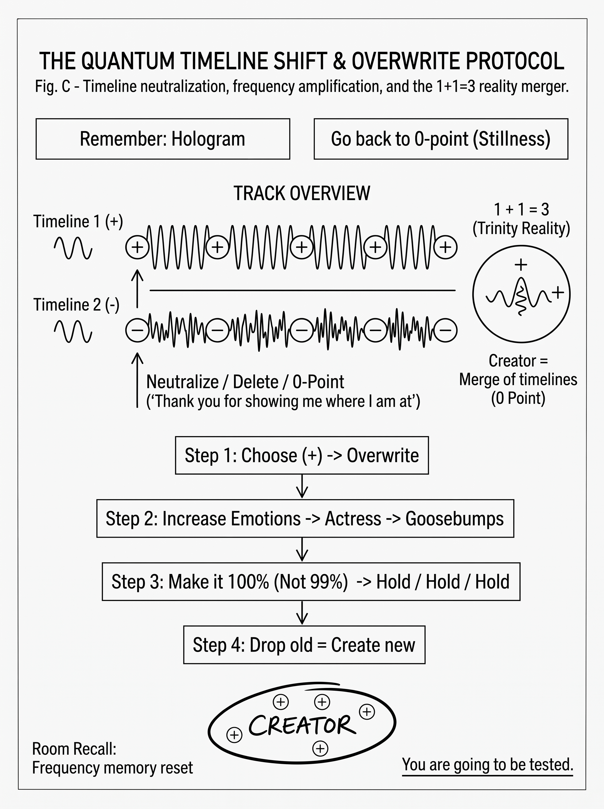
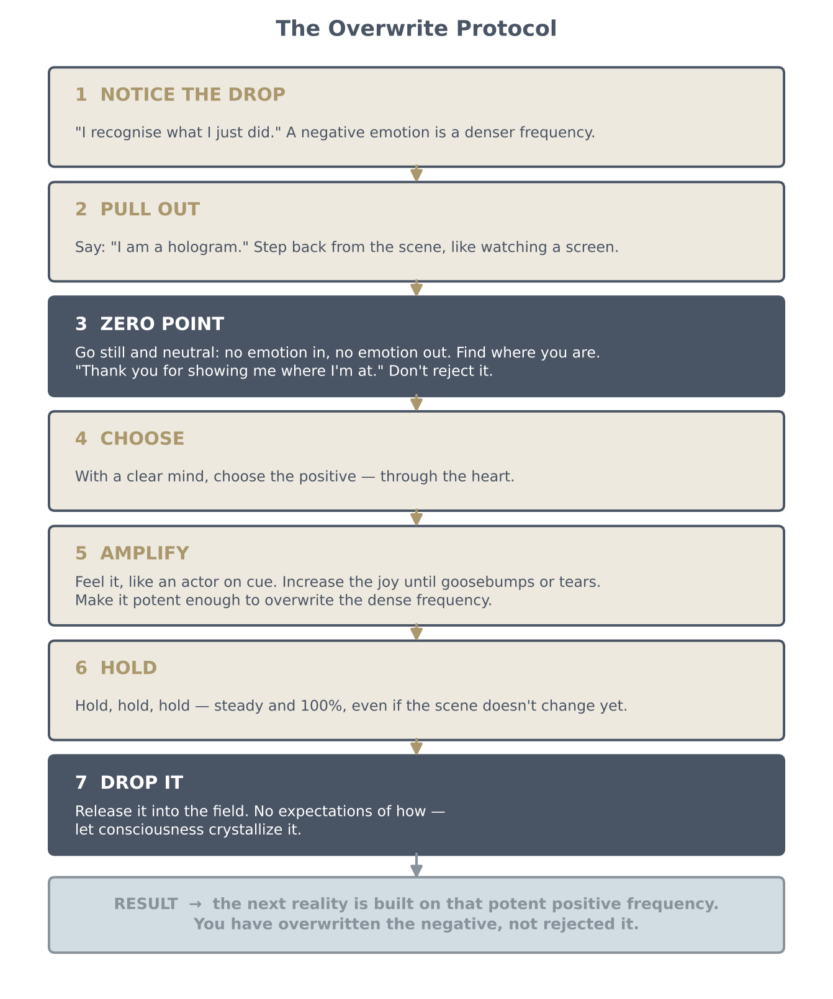

Mobilizing Structures
Zero point, the 1 + 1 = 3 merge, and how to overwrite a negative reality
Key teachings
2.1Zero point — stillness and knowing where you are
The talk revisits the one particle (see 1.1) and adds that it is also a nano particle: it expands, like breathing, and when it collapses it reaches the zero point. Zero point is stillness: no frequency coming in and no frequency going out. It is pure awareness of your location in the quantum field.
The TV picture from 1.4 is extended: imagine sitting in front of many screens at once, each a reality you exist in. Which one you experience depends on your emotion, deeds and actions; they are your remote control. To use it well you first pull out and sit back in front of the screens, still, and check where you are.
Knowing your location matters because if you don't, you "pop out" into a completely different reality or timeline without knowing where you are (see 1.6). Once you know your location, the next frequency you send from that awareness creates the next reality.
2.2Mobilizing structures: 1 + 1 = 3
You are always shifting from one reality to the next and reprinting everything around you each time. Two realities, one after the other, are similar but never exactly the same in frequency. To manifest, they must be similar enough to merge. When they merge, they form a third reality: 1 + 1 = 3, the trinity (see 1.1).
Your emotion decides the merge. If you are happy and then drop into doubt, your energy field switches so sharply that you fall into a different reality, and the next one is built on the negative. If instead you stay steady and keep reacting positively, even while the other person stays negative, you override the negative moment by moment. The two timelines become one positive unit.
Both timelines co-exist; you move between them by choosing. That choice is made from zero point. Without it, shifting is random, because uncontrolled emotion keeps dropping you into denser realities. Emotion gives the frequency to the next reality, and your deed (action) infuses it.

2.3Doubt makes you flicker
Doubt doesn't just pause you; it makes you bounce nonstop between two realities, like a waveform, so fast you can't tell where you're going. The quantum field never makes a mistake, so eventually it picks one: the one you infused more. If you spent more of the day in doubt, the third reality comes out negative, even if you didn't notice. Whatever emotion you stay in most, through the day and in your reactions, becomes the outcome.
2.4Neutral is for hard moments — joy is not to be suppressed
Zero point means being neutral in a disturbing situation: not giving or taking emotion, just observing. It does not mean holding back joy. When you feel joy, keep going: each next shift is again joy, and you build a joyful timeline. The new frequencies arriving now, the talk says, come from the fifth dimension and above, are positive, and can activate your DNA. The more positive you are, the more positive you see.
2.5Other people's projections are not your truth
What you are shown, especially in the news, is a projection of someone else's timeline placed on top of you. Watch it over and over and you start to believe it; once you believe it 100%, it manifests for you. Instead, be aware: "That's what they're projecting. Good for them. Love and light."
The example is a storm forecast. Instead of accepting it, project that the weather is beautiful and keep doing so even if the sky is dark or rain starts. Give gratitude even for the rain: gratitude neutralizes what you see, bringing you to zero, so your new frequency can override it. The alternative is fluctuating into doubt because someone else told you what would happen.
Language matters: say "I know", not "I will". "Will" keeps you waiting; manifestation is in the now. Also follow the money: if something is truly for humanity, it comes through the heart, not at a high price.
2.6Overwrite — don't reject, don't "delete"
You cannot delete a negative thought by rejecting it, because what you see is part of the structure, and you are the structure (see 1.1). You "delete" it through neutrality: "I understand you're there. Thank you for showing me where I'm at in the quantum field." Then project a new, stronger frequency over it. You are not rejecting it; you are overriding it.
The guidance is to make the new frequency potent. When told "Action!" like an actor, switch your emotion to positive and keep increasing the joy until you have goosebumps or tears. Like a stronger dose of medicine, it has to be stronger than the dense frequency it replaces. Then hold it, and finally to drop it: release it into the field so the consciousness you're made of can crystallize it. Dropping it matters because holding on adds conditions. With no conditions, "Pandora's box is open" and you receive everything you need. In the example given, the whole day turned out positive.
Release the specifics too. Imagine the big picture without scripting it (the example: humanity living in beautiful cities, with free energy and benevolent extraterrestrials) and keep holding it, even when you hear negative news.
2.7Every moment is a brand-new reality
When you fall off the timeline you wanted and then rise again, you don't return to the old one: you create a brand new reality, and every moment does the same. That's why you can let go of past sorrow: it has nothing to do with the new you projected into the field. A timeline you held long enough can crystallize so differently that you no longer remember someone from an old one.
What you repeat, you build. A constant diet of violent films or games feeds a timeline similar to it, which is why the advice is not to let children consume a lot of negative content.
You also need recall. Each new hologram reprints the frequencies of the last one so you know where you are. When you walk into a room and forget why, you have shifted so fast you lost the frequency. The method: recall the previous room's frequency — where you were, what you were thinking, doing or saying — and the memory returns.
2.8Ascension: your own, and always positive
This reality is described as a dream state of consciousness that feels real, like touching something in a dream. Raising your consciousness shifts you to another timeline. Contact with extraterrestrials works the same way: your reality and theirs merge into a third, which needs similar frequencies held steady.
Consciousness cannot exist in the negative only; it would disengage. So persistent negativity eventually dissipates, and people who stay negative meet realities that push them to stop. Each person makes their own ascension: be kind, share and give, and you match the less dense fifth-dimensional structures. Choose greed and negativity, and you project into a dense timeline, "underwater" instead of above it (see 1.3).
In ascension "all the dirt" comes to the surface because it can't match 5D. Don't hate those exposed; it is their level of consciousness. Give gratitude that it came out. Without seeing the negative you couldn't choose the positive. It is a classroom: learn the lesson and move on.
2.9Affirmations, ego and peeling the layers
Affirmations work when stated in the now: "I am fine," "I am great." "I'm going to be fine" is false language that keeps you waiting. Say it knowing it 100%, so your frequency stops fluctuating, even if others say otherwise.
But watch the ego. Affirming "I'm perfect" to dismiss someone's fair feedback is ego. Peel the layers: why do I really want this? Is it from my heart or my ego? Do I want to talk to one person, or a thousand because it makes me feel important? Ego is dense and built on false pretense. The heart's vibration is consciousness itself, which is why heart-based manifestation can be instant, while conditions slow it.
We are perfect in the structure, but confused and manipulated. You will be tested, and what counts is how you behave towards people. When you slip into ego, you will be corrected: shift to gratitude and drop expectations towards people and situations.
2.10When people stay negative
Talk it through and try to change the situation. If it doesn't change, pull out and choose where you want to be, so you keep your integrity. It hurts because you care. But don't hate: hatred is a false pretense too. Love the person, who is out of balance, and offer help. If they refuse it, put your energy into people who are ready. "Make your own world."
On money (see 1.7): pay your bills and do your work. But don't let "how can I make money from this person?" sit behind your help. Give from the heart and what you need can arrive.
Finally, the talk stresses that it shares one truth, the one it was shown, to explain how the structure works. What you hear from anyone, including messages and news, is a projection from another timeline and doesn't have to be your truth. The aim is to empower you, so that you don't need anyone else to do it for you: you are the consciousness itself, and you choose what to create.
The method — the Overwrite Protocol
Use it the moment you notice a negative emotion, a disturbing scene, or someone else's projection:
- Notice the drop. "I recognise what I just did." Negative emotion is a denser frequency.
- Pull out. Tell yourself, "I am a hologram." Step back as if watching the screens.
- Go to zero point. Still and neutral, with no emotion in or out. Find your location. Say "Thank you for showing me where I'm at." Don't reject what you see; gratitude neutralizes it.
- Choose with a clear mind: the positive, through the heart. Speak it in the now ("I am", "I know").
- Amplify. Switch the emotion on like an actor on cue and increase it until you feel it strongly (goosebumps, tears). It must be stronger than what it overwrites.
- Hold, hold, hold, steadily and at 100%, even if the scene doesn't change yet. Steadiness decides the 1 + 1 = 3 outcome.
- Drop it. Release it into the field with no expectations of how, and let consciousness crystallize it.

